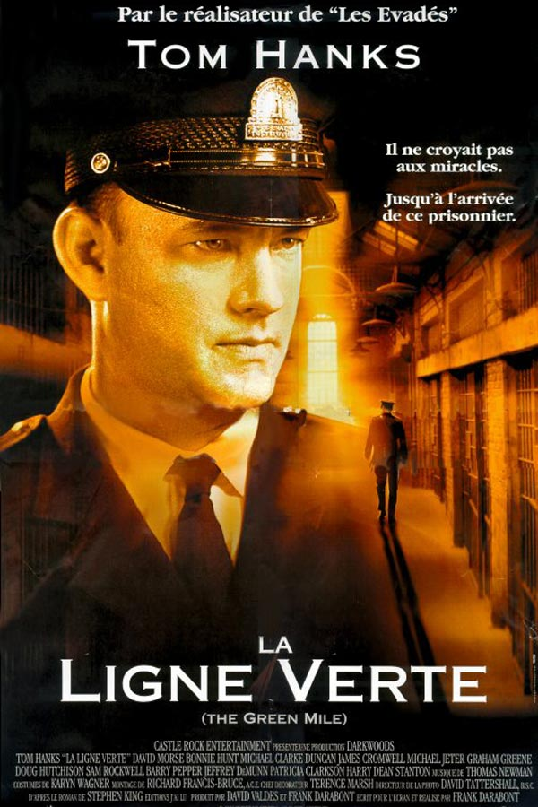

Patrick Berczelly
Full Stack Developer
After 3 years in financial markets, I got bored and launched Le Wagon. Our mission: bring technical skills to creative people.
See for yourselfMy Favorite Movies
Un ProphèteCondamné à six ans de prison, Malik El Djebena ne sait ni lire, ni écrire. A son arrivée en Centrale, seul au monde, il paraît plus jeune, plus fragile que les autres détenus. Il a 19 ans. D'emblée, il tombe sous la coupe d'un groupe de prisonniers corses qui fait régner sa loi dans la prison. Le jeune homme apprend vite. Au fil des " missions ", il s'endurcit et gagne la confiance des Corses. Mais, très vite, Malik utilise toute son intelligence pour développer discrètement son propre réseau... |
|

|
LionUne incroyable histoire vraie : à 5 ans, Saroo se retrouve seul dans un train traversant l’Inde qui l’emmène malgré lui à des milliers de kilomètres de sa famille. Perdu, le petit garçon doit apprendre à survivre seul dans l’immense ville de Calcutta. Après des mois d’errance, il est recueilli dans un orphelinat et adopté par un couple d’Australiens. 25 ans plus tard, Saroo est devenu un véritable Australien, mais il pense toujours à sa famille en Inde. Armé de quelques rares souvenirs et d’une inébranlable détermination, il commence à parcourir des photos satellites sur Google Earth, dans l’espoir de reconnaître son village. Mais peut-on imaginer retrouver une simple famille dans un pays d’un milliard d’habitants ? |
|  |
La ligne vertePaul Edgecomb, pensionnaire centenaire d'une maison de retraite, est hanté par ses souvenirs. Gardien-chef du pénitencier de Cold Mountain en 1935, il était chargé de veiller au bon déroulement des exécutions capitales en s’efforçant d'adoucir les derniers moments des condamnés. Parmi eux se trouvait un colosse du nom de John Coffey, accusé du viol et du meurtre de deux fillettes. Intrigué par cet homme candide et timide aux dons magiques, Edgecomb va tisser avec lui des liens très forts. |
About this Page
This page has been coded during the FullStack program @LeWagon. That was probably the best experience of my entire life.